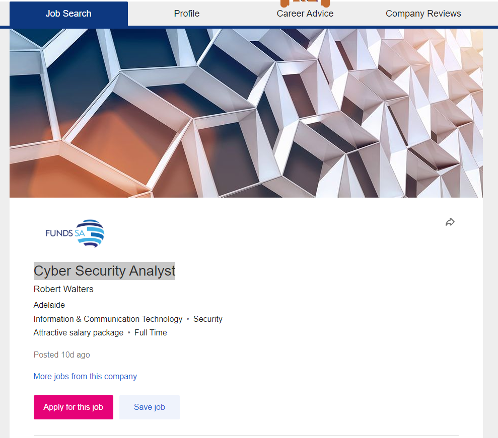

Oliver Sloane,
s3915366,
s3915366@student.rmit.edu.au
Hi I’m Oliver Sloane born 27/03/2001 which makes me 20, I am from Australia born in Hamilton, Victoria. I grew up overseas in the middle-east for 8 years, moving from Kuwait to Dubai then back to Kuwait. Going to English academies and international schools from kinder to year 4. Then coming back to Australia in 2011, I’ve lived in a few towns since moving back to Australia. From a small country town an hour out of Wodonga called Eskdale, then to Mildura and from there to Bendigo which I am still staying.
My education I have completed, is a VCE level of education, with 1 year of a diploma of nursing.
My hobbies include,
Playing soccer for Epsom scorpions, Gaming on my pc, going to gym, watching YouTube, catching up with friends and spending time with my dog Athena.
My interest in IT is the possibilities that can be explored and the challenges that I will face with the prospect of what I can create with the knowledge given to me by this course. The interest in IT probably began when I started playing games on my family pc. The pc was not immensely powerful for gaming, so a lot of the time I would watch tutorials on YouTube on how to reduce the graphics in games, by going through the game files and recoding it. From there I just did coding classes at school and technology classes.
Why I chose RMIT because I went through open university, I was looking for IT courses to do with the ATAR I got which wasn’t amazing, I found this course and the pre requirements were only the 2 starting classes so I jumped on that wagon.
I believe that I will advance me knowledge in the IT in programming and improve what I know about different technologies and maybe become interested in a certain area.
Cyber Security Analyst Link here to job
For this specific job, as a Cyber Security Analyst. The appeal for the job from my perspective is the challenges and problem solving tasks that it would involve such as.
Monitor the organisations computer networks and cloud systems to identify any violations and security breaches that need to be resolved. As well from this working in a team to work out these tasks, building friendships in the workplace to make it an enjoyable job.
Qualifications needed for this job
Proper tertiary qualifications in the relevant field.
The proper security clearance.
Experience in cyber security area.
My experience in the field is very limited at the moment but basic administration tasks, such as sending & receiving emails, documenting data, customer service skills, decent communication, and good teamwork management.
Type “The Campaigner” (ENFP-A)
Traits
Extraverted - 53%
Intuitive - 51%
Feeling - 59%
Prospecting - 56%
Assertive - 54%
Role Diplomat
Strategy People Mastery